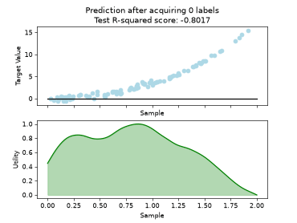

Pool-based AL Strategies#
Legend for classification plots

Legend for regression plots


Query-by-Committee (QBC) with Kullback-Leibler Divergence
Query-by-Committee (QBC) with Kullback-Leibler Divergence


Batch Active Learning by Diverse Gradient Embedding (BADGE)
Batch Active Learning by Diverse Gradient Embedding (BADGE)


Fast Active Learning by Contrastive UNcertainty (FALCUN)
Fast Active Learning by Contrastive UNcertainty (FALCUN)

Batch Density-Diversity-Distribution-Distance Sampling
Batch Density-Diversity-Distribution-Distance Sampling


Batch Bayesian Active Learning by Disagreement (BatchBALD)
Batch Bayesian Active Learning by Disagreement (BatchBALD)
Expected Model Variance Reduction
Expected Model Variance Reduction


Regression based Kullback Leibler Divergence Maximization
Regression based Kullback Leibler Divergence Maximization

Regression Tree Based Active Learning (RT-AL) with Random Selection
Regression Tree Based Active Learning (RT-AL) with Random Selection

Regression Tree Based Active Learning (RT-AL) with Diversity Selection
Regression Tree Based Active Learning (RT-AL) with Diversity Selection

Regression Tree Based Active Learning (RT-AL) with Representativity Selection
Regression Tree Based Active Learning (RT-AL) with Representativity Selection